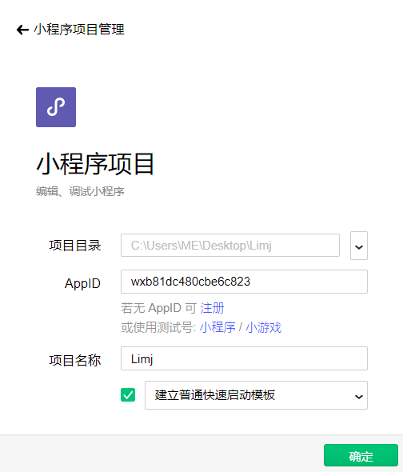

小程序介绍
微信小程序ID
1 登录微信公总号平台
2 在左侧栏中打开 -》 开发 -》开发设置 在这里就能看到自己的ID
新建一个项目的注意项
最后一项 必须勾选到建立普通快速启动模板

微信小程序有小程序开发和游戏开发
游戏开发主要使用: canvas 和 webgl
canvas 属于 2D游戏开发
webgl 属于 3D游戏开发
小程序组件
### navigator - 跳转
1: 不能跳转到外网 如百度
2: url属性的前面必须加上/ 这样就会在pages根目录开始查找页面
3: navigator如果跳转到tabBar上指定的页面时 必须加上 open-type=”switchTab”
image - 图片
1: 常用的图片展示属性 短边完全展示 长边截图 保持图片比例 mode=”aspectFill”
2: 长边完全显示,短边留白 mode=”aspectFit”
3: 缩放模式，不保持纵横比缩放图片，使图片的宽高完全拉伸至填满 image 元素 mode=”scaleToFill”
4: 缩放模式，宽度不变，高度自动变化，保持原图宽高比不变 mode=”widthFix”
form - 表单
1: input表单在html结构中是有宽高背景边框的 在 小程序里面就不会有这些固定好的属性
2: 小程序的组件 和 html的标签是一样的 但是 属性不一样
3: input 的常用属性 value => 字符串类型 => 输入框的初始化内容
4: input 的常用属性 type => 字符串类型 => 默认值 => text => input的类型
5: input 的常用属性 password => Boolean类型 => 默认值 false => 是否是加密类型
6: input 的常用属性 placeholder => 字符串类型 => 输入框的占位符
7: input 的常用属性 disabled => Boolean类型 => 默认值是false => 是否禁用
8: type 的常用属性 type=”text” => 文本输入键盘
9: type 的常用属性 type=”number” => 数字输入键盘 => 即是手机端会弹出一个数字键盘 => 用于手机号
10: type 的常用属性 type=”idcard” => 身份证输入键盘
11: type 的常用属性 type=”digit” => 带小数点的数字键盘 => 用于转账/付款
form表单基本提交案例
第一步: 设置 button form-type=’submit
第二步: 通过bindsubmit设置form的提交事件处理函数 这个函数是自己起名的 主要是使用bindsybmit来绑定
注意项: 其中的name值是必须要写的 不然e返回的detai里面的value无法存储值
1
2
3
4
5
6
7
8
9
10
11// wxml
<form bindsubmit="formSubmit">
<input type="text" name="username" placeholder></input>
<input type="text" name="password" placeholder></input>
<button form-type="submit">提交</button>
</form>
// js
formSubmit: function(e){
console.log(e)
}
rpx 尺寸单位
rpx可以使元素根据屏幕宽度进行自适应，小程序规定屏幕的宽度为750rpx， 也就是 100% = 750rpx; 50% = (750 / 2)rpx
什么时候能用rpx呢 就是 设计稿的宽度为 750px时 才可以使用
在设计稿为 750px时 750px 就等于 750rpx , 350px 就等于 350rpx
注: 注意1rpx在某些屏幕上可能无效
当像素小于5像素时就不要使用rpx了 直接使用px
rpx 最好不要用于字体大小的布局
样式导入 => @import “url”
1.wxss 不需要导入到wxml，在页面目录下创建即可生效
2.app.wxss是全局样式,page中的wxss是页面的局部样式
3.@import “url” 样式导入
程序的生命周期函数
1: 在程序入口app.js中调用App(), 而且必须调用且只能调用一次，然后再App()的参数中可以声明生命周期函数
2: 后台：当用户点击右上角关闭，或者按了设备 Home 键离开微信，此时小程序并没有直接销毁，而是进入了后台
3: 函数 => onLaunch , 描述 => 监听小程序初始化 , 触发时机 => 小程序初始化完成时（全局只触发一次）, 从当前小程序离开5分钟后就会销毁 , 所以生命周期为5分钟
4: 函数 => onShow , 描述 => 监听小程序显示/代码解释完毕 渲染页面 , 触发时机 => 小程序启动，或从后台进入前台显示时,代码解析完毕,渲染页面执行
5: 函数 => onHide , 描述 => 监听小程序隐藏/也就是从小程序切换到了QQ聊天这么一个过程 , 触发时机 => 小程序从前台进入后台时
示例 程序的生命周期是写在全局的js里面 写在这个app({}) 对象里面 不能删掉
1
2
3
4
5
6
7
8
9
10
11
12
13
14app({
// 小程序初始化完成时（全局只触发一次）
onLaunch: function (){
console.log("初始化")
},
// 代码解释完毕 渲染页面
onShow: function (){
console.log("代码解释完毕")
},
// 小程序从前台进入后台时
onHide: function (){
console.log("小程序从前台进入后台时")
}
})
页面的生命周期
注意1: 页面的生命周期函数位置是写在 页面的js中 主要写在page({}) 的对象里
注意2: 程序的生命周期: app.js中onLaunch在小程序初始化中触发
注意3: 页面的生命周期: onLoad 只在页面加载的时候执行一次, onShow每次访问页面都会执行, 通常onLoad在onShow之前执行
示例
1
2
3
4
5
6
7
8
9
10
11
12// 页面组件加载时候触发 一个页面只会调用一次
onLoad: function (){
console.log("触发onLoad")
},
// 每次显示当前的页面都会触发
onShow: function (){
console.log("触发onShow")
},
// 每次当前页面隐藏或者跳转离开当前页面时候都会触发
onHide: function (){
console.log("触发onHide")
}
Mpvue小程序项目框架搭建
Mpvue官网
1: 跟着文档开始安装
2: 来到桌面的方法: window + r 打开cmd , 然后在桌面随意打开一个文件夹 复制这个文件夹/斜杠前的那一部分 斜杠前不包括斜杠 , 然后就cd 粘贴 回车 就来到了桌面
3: vue init mpvue/mpvue-quickstart my-project 这一条才是真正的安装项目框架 后面的my-project是项目的名字 可以自己取
4: 下面这个是示例展示图

mpvue 和 vue 的区别
1 | // mpvue 和 vue 的区别 |
组件/form表单组件
键盘输入时触发
1 | // wxml |
placeholder自定义颜色
1 | // wxml one |
绑定事件
指南/事件系统/绑定事件
事件绑定: bind绑定 => bindtap=”btn”
事件绑定: catch绑定 (能阻止冒泡) => catchtap=”btn” 1
2
3
4
5touchstart: 手指触摸开始
touchmove: 手指触摸移动
touchcancel: 手指触摸动作被打断，如来电提醒，弹窗
touchend: 手指触摸结束
tap: 点击
示例 1
2
3
4
5
6
7
8
9
10
11
12
13
14
15
16
17
18
19
20
21// wxml
<button bindtap="btn">点击</button>
// js
data: {
text: "文本",
bool: false
},
btn: function () {
console.log(123)
// 拿到data中的text
var getText = this.data.text;
console.log(getText);
// 改变data中的数据
this.setData({
text: "改变文本",
bool: !this.data.bool,
})
console.log(this.data.text);
console.log(this.data.bool);
}
API/路由/跳转方法
wx.switchTab
跳转到 tabBar 页面，并关闭其他所有非 tabBar 页面
wx.reLaunch
保留当前页面，跳转到应用内的某个页面。但是不能跳到 tabbar 页面。使用 wx.navigateBack 可以返回到原页面。小程序中页面栈最多十层
案例
左侧导航菜单点击当前就给当前添加active样式
1 | // wxml |
自定义组件
类似于页面，一个自定义组件由 json wxml wxss js 4个文件组成
要编写一个自定义组件，首先需要在自定义组件的 json 文件中进行自定义组件声明（将 component 字段设为 true 可这一组文件设为自定义组件
json 1
2
3{
"component": true
}
wxml 1
2
3
4
5
6
7
8
9
10
11
12
13
14<view class="footer">
<view class="footer_nav">
<view class="footer_nav_wrap ul" style='{{apple}}'>
<view class="{{index==activeTab?'active':''}} li" style="{{marg}}"
wx:for="{{tabData}}" wx:for-item="item" catchtap="tabTap"
wx:key="index" data-id="{{item.id}}" data-index="{{index}}">
<view class="image">
<image src="{{item.img}}" alt=""></image>
</view>
<view class="title">{{activeTab}}{{index}}{{item.text}}</view>
</view>
</view>
</view>
</view>
wxss 1
2
3
4
5
6
7
8
9
10
11
12
13
14
15
16
17
18
19
20
21
22
23
24
25
26
27
28
29
30
31
32
33
34
35
36
37
38
39
40
41
42
43
44
45
46
47.footer .footer_nav {
width: 750rpx;
}
.footer .footer_nav .footer_nav_wrap {
position: fixed;
bottom: 0;
width: 750rpx;
height: 104rpx;
/* height: 160rpx; */
/* height: 8.5%; */
display: flex;
justify-content: space-between;
align-items: center;
background: #fff;
box-shadow: 0 -6rpx 12rpx rgba(33, 134, 216, 0.13);
z-index: 99;
padding-top: 22rpx;
padding-bottom: 15rpx;
}
.footer .footer_nav .footer_nav_wrap .li{
width: 100%;
/* margin-top: 2%; */
text-align: center;
/* color:#a9b7b7; */
color:#333;
}
/* .footer .footer_nav .footer_nav_wrap .active {
color: #3193e1;
} */
.footer .footer_nav .footer_nav_wrap .li .image {
height: 50rpx;
margin-bottom: 5rpx;
/* xxx */
width: 52rpx;
display: inline-block;
}
.footer .footer_nav .footer_nav_wrap .li .title {
font-size: 20rpx;
}
.footer .footer_nav .footer_nav_wrap .li .image image {
height: 100%;
width: 100%;
}
js 1
2
3
4
5
6
7
8
9
10
11
12
13
14
15
16
17
18
19
20
21
22
23
24
25
26
27
28
29
30
31
32
33
34
35
36
37
38
39
40
41
42
43
44
45
46
47
48
49
50
51
52
53
54
55
56
57
58
59
60
61
62
63
64
65
66
67
68
69
70
71
72
73
74
75
76
77
78
79
80
81
82
83
84
85
86
87
88
89
90
91
92
93
94
95
96
97
98
99
100
101
102
103
104
105
106
107
108
109
110
111
112
113
114
115
116
117
118
119
120
121
122
123
124
125
126
127
128
129
130
131
132
133
134
135
136
137
138
139
140
141
142
143
144
145
146
147
148
149
150
151
152
153
154
155
156
157
158
159
160
161
162
163
164
165
166
167
168
169
170
171
172
173
174
175
176
177
178
179
180
181
182
183
184
185
186
187// components/navigation.js
let app = getApp()
Component({
/**
* 组件的属性列表
*/
properties: {
activeTab:{
type:Number,
default:0,
apple:""
}
},
/**
* 组件的初始数据
*/
data: {
tabData: [
{
text: "首页",
id: 0,
img: "/img/menu_home.png"
},
{
text: "分类",
id: 1,
img: "/img/menu_categories.png"
},
{
text: "购物车",
id: 2,
img: "/img/menu_cart.png"
},
{
text: "我的",
id: 3,
img: "/img/menu_my.png"
},
],
tabIoc: [
{
id: 0,
static: "/img/menu_home.png",
active: "/img/menu_home2.png",
},
{
id: 1,
static: "/img/menu_categories.png",
active: "/img/menu_categories2.png",
},
{
id: 2,
static: "/img/menu_cart.png",
active: "/img/menu_cart2.png",
},
{
id: 3,
static: "/img/menu_my.png",
active: "/img/menu_my2.png",
},
],
captain:false
},
/**
* 组件的方法列表
*/
methods: {
tabTap(e) {
// data-index定义的值
// console.log(e.currentTarget.dataset.index)
this.setTabActiveImg(e.currentTarget.dataset.index);
// data-id定义的id值
let id = e.currentTarget.dataset.id
switch (id) {
case 0:
// wx.switchTab({pbject}): 跳转到tabBar页面 并关闭其他所有非tabBar页面
// wx.switchTab({ url: '/pages/index/index' })
wx.navigateTo({ url: '/pages/index/index' })
break;
case 1:
wx.navigateTo({ url: '/pages/categories/categories' })
break;
// this.wangchange()
// if(this.data.captain){
// // 保留当前页面，跳转到应用内的某个页面。但是不能跳到 tabbar 页面。
// // 使用 wx.navigateBack 可以返回到原页面。小程序中页面栈最多十层。
// wx.navigateTo({ url: '/pages/categories/categories' })
// }else{
// // 网上点单
// // setTimeout(function(){
// // wx.switchTab({
// // url: '/pages/cishan/cishan',
// // })
// // },1000)
// }
// break;
case 2:
wx.navigateTo({ url: '/pages/sign_in/sign_in' })
break;
case 3:
wx.navigateTo({ url: '/pages/sign_in_phone/sign_in_phone' })
break;
}
this.setData({
activeTab: e.currentTarget.dataset.id
})
},
setTabActiveImg(index) {
// console.log(this.data.activeTab)
// this.data.tabIoc.map((item, index) => {
// this.data.tabData.map((items, indexs) => {
// if (item.id === items.id && item.id === this.data.activeTab) {
// // console.log(this.data.activeTab);
// let tempKey = "tabData[" + this.data.activeTab + "].img",
// value = this.data.tabIoc[this.data.activeTab].active;
// this.setData({
// [tempKey]: value
// })
// } else if (item.id !== this.data.activeTab) {
// let tempKey = "tabData[" + index + "].img",
// value = this.data.tabIoc[index].static;
// this.setData({
// [tempKey]: value
// })
// // console.log(this.data);
// }
// })
// })
// 0605.
// 传索引
let indexs=index||this.data.activeTab,
// 根据 - 索引 - 拿到tabDate中的图片
tempKey = "tabData[" + indexs + "].img",
// 根据 - 索引 - 拿到tabIoc中的图片路径
value = this.data.tabIoc[indexs].active;
// console.log(tempKey);
// console.log(value);
this.setData({
[tempKey]: value
})
},
wangchange: function () {
app.getAget("/mobile/activity/add_activity").then(function (res) {
console.log(res.data);
if (res.data.status==0){
this.setData({
captain: false
})
wx.showToast({
title: '该功能仅限团队队长使用',
icon: 'none'
})
}else{
this.setData({
captain: true
})
}
})
}
},
lifetimes:{
attached(){
// 在组件实例进入页面节点树时执行
this.setTabActiveImg();
// 判断iPhoneX
var apple = wx.getStorageSync('iPhoneX')
// console.log(apple)
if (apple) {
this.setData({
apple:"height: 160rpx;",
marg: "margin-bottom: 50rpx;transform: scale(.8);"
})
}else{
this.setData({
apple: "height: 108rpx;"
})
}
},
detached(){
// 在组件实例被从页面节点树移除时执行
},
},
})
在需要的页面调用组件 - 首先 - json 1
2
3
4
5
6{
"navigationBarTitleText": "商家分类",
"usingComponents": {
"navigation": "/navigation/navigation"
}
}
在需要的页面中 引用 1
2
3
4
5<!-- 底部菜单 -->
<view>
<!-- 以下是对一个自定义组件的引用 -->
<navigation activeTab="1"></navigation>
</view>
tab栏切换
wxml 1
2
3
4
5
6
7
8
9
10
11
12
13
14<!-- tabs栏 -->
<view class="tabs">
<view class="h {{ index == tabsindex ? 'active' : '' }}" wx:for="{{tabs}}" wx:key="index" data-index="{{index}}" bindtap="selectBtn">
<text class="text">{{item}}</text>
</view>
</view>
<!-- main内容 -->
<view class="tabs_main" wx:if="{{tabsindex==0}}">
</view>
<view class="tabs_main" wx:if="{{tabsindex==1}}">
</view>
<view class="tabs_main" wx:if="{{tabsindex==2}}">
</view>
js 1
2
3
4
5
6
7
8
9
10
11
12page({
data: {
tabs: ["商品","评价1587","商家"],
tabsindex: 0
},
selectBtn: function(e) {
console.log(e);
this.setData({
tabsindex: e.currentTarget.dataset.index
})
},
})